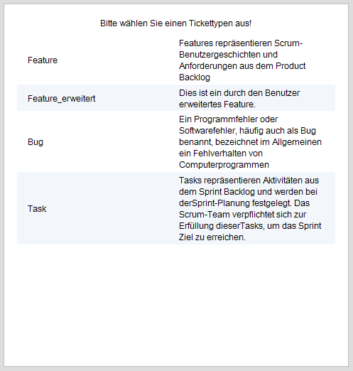

Tickettypen-Administration
Über die Tickettypen-Administration können einem Tickettyp benutzerdefinierte Zustände, Zustandsübergänge sowie Feldtypen zugeordnet werden.
Vor der eigentlichen Tickettypen-Administration muss der gewünsche Tickettyp ausgewählt werden.

hierbei stehen folgende Standard-Tickettypen zur Verfügung:
Features repräsentieren Scrum-Benutzergeschichten und Anforderungen aus dem Product Backlog
Ein Programmfehler oder Softwarefehler, häufig auch als Bug benannt, bezeichnet im Allgemeinen ein Fehlverhalten von Computerprogrammen.
Tasks repräsentieren Aktivitäten aus dem Sprint Backlog und werden bei der Sprint-Planung festgelegt. Das Scrum-Team verpflichtet sich zur Erfüllung dieserTasks, um das Sprint Ziel zu erreichen.
Weiterhin werden hier alle über die Oberfläche "Feldtypen-, Zustands- und Tickettypen-Erzeugung" im Bereich "Tickettypen" erzeugten Tickettypen zur Auswahl angeboten.
Created with the Personal Edition of HelpNDoc: Create iPhone web-based documentation